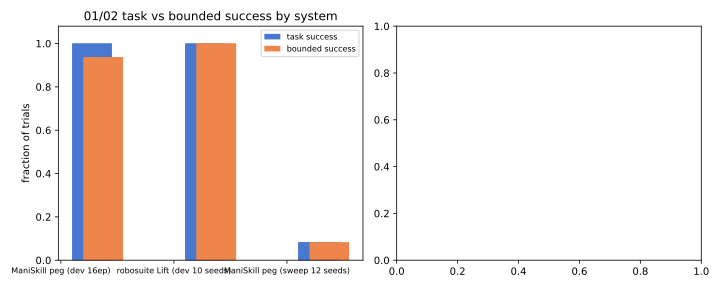
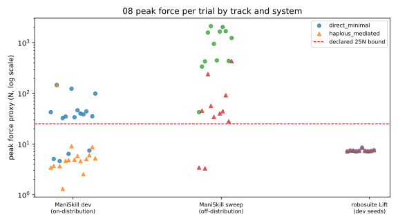
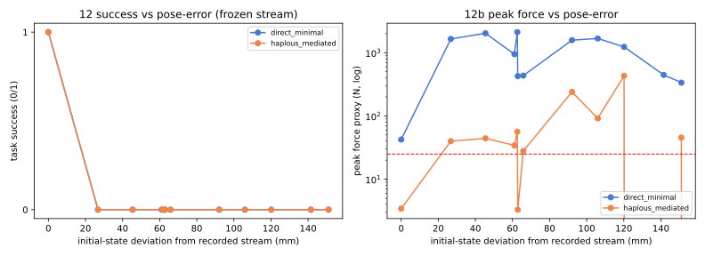
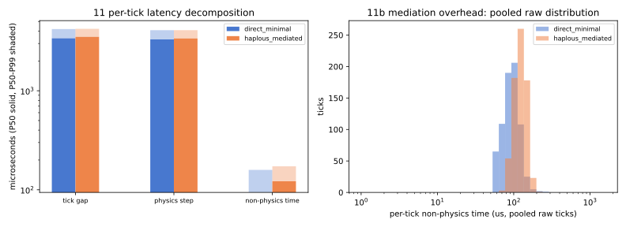

Generated by scripts/make_final_campaign_report.py from committed result artifacts. Figures only where data exists.
| track | system | task success | bounded success |
|---|---|---|---|
| ManiSkill peg (dev 16 episodes) | direct_minimal | 16/16 | 4/16 |
| ManiSkill peg (dev 16 episodes) | haplous_mediated | 16/16 | 16/16 |
| robosuite Lift (dev 10 seeds) | direct_minimal | 10/10 | 10/10 |
| robosuite Lift (dev 10 seeds) | haplous_mediated | 10/10 | 10/10 |
| ManiSkill peg (sweep 12 perturbation seeds) | direct_minimal | 1/12 | 0/12 |
| ManiSkill peg (sweep 12 perturbation seeds) | haplous_mediated | 1/12 | 1/12 |

Declared bound 25N (preregistered in the drivers before any paired run). On-distribution trials: mediation caps the post-seat excursion; off-distribution: direct timeouts reach 336-2115N while mediated aborts at the bound (0-432N).


| system | P50 (us) | P95 (us) | P99 (us) | max (us) |
|---|---|---|---|---|
| direct_minimal | -2.5 | 280.4 | 546.2 | 574.0 |
| haplous_mediated | 35.7 | 363.4 | 488.5 | 580.7 |

| track | FAR | note |
|---|---|---|
| ManiSkill peg dev (on-distribution) | 0/16 | mediated aborted 0 feasible trials |
| robosuite Lift dev | 0/10 | mediated aborted 0 feasible trials |
| engine / axis | outcome agreement | ranking agreement | failure-class note |
|---|---|---|---|
| MuJoCo (internal HEB offset sweep) | 9/9 cells | no ranking change | 0 violations below boundary |
| PhysX (ManiSkill sweep) | 12/12 seeds | no ranking change | boundedness divergence: direct 336-2115N vs mediated 0-432N |
The two tracks are conceptually aligned (peg insertion, mediation on/off paired), NOT environment-equivalent: different simulators, geometries (internal 5mm-scale peg vs ManiSkill box-side insertion), perturbation axes (commanded offset vs initial-realization deviation), and force measurement (MuJoCo sensor-class force vs PhysX last-substep impulse-derived proxy). Section 20 of the campaign: no exact force equivalence is claimed or tested.
| component | location | delta |
|---|---|---|
| ManiSkill adapter + policy | benchmarks/external/maniskill_{task,policy}.py | ~470 LOC benchmark-owned |
| robosuite Lift adapter + policy | benchmarks/external/robosuite_lift_{task,policy}.py | ~420 LOC benchmark-owned |
| hpl core (runtime.py, machine.py, state.py, constraints.py, evidence.py) | unchanged | 0 LOC core delta; 0 task-specific branches |
| haplous CLI (doctor/list) | +19 lines | capability matrix only, no simulator imports |